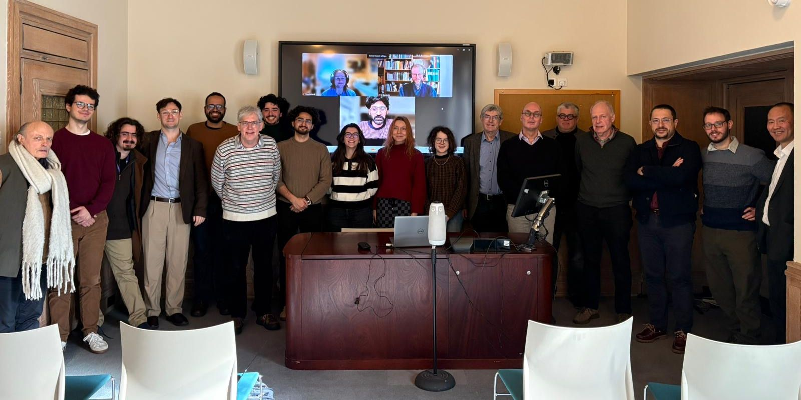
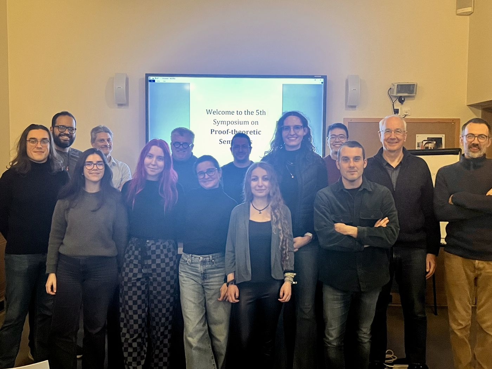
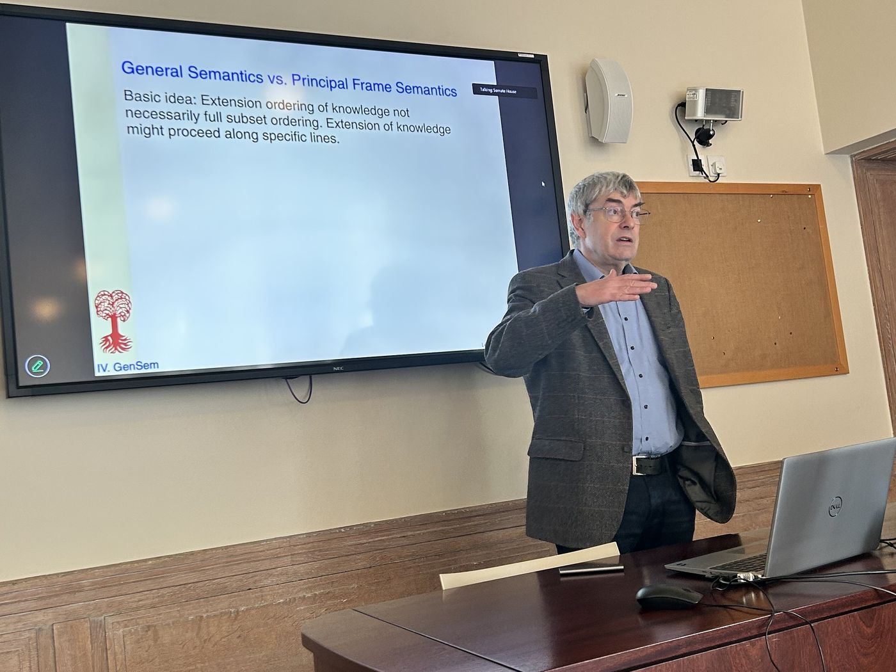
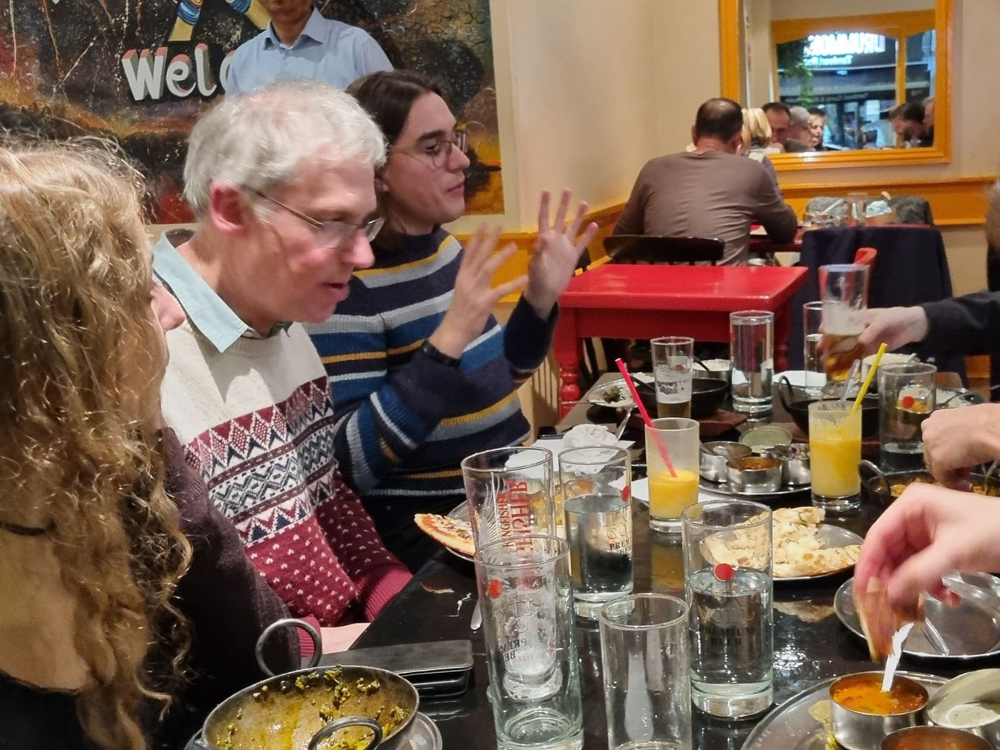
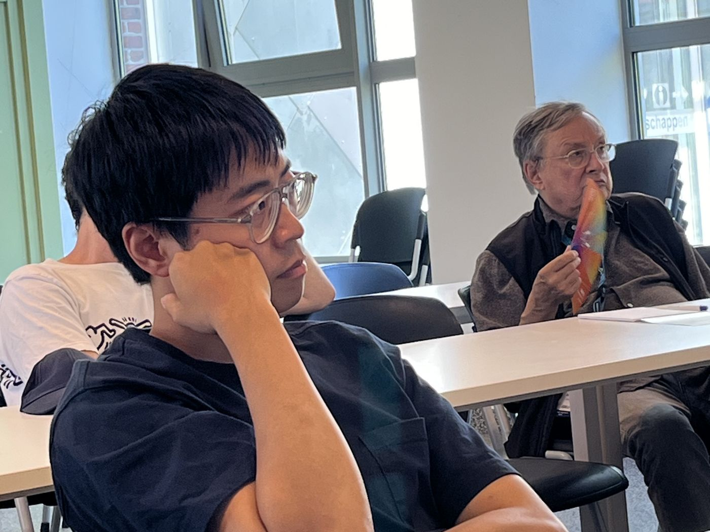
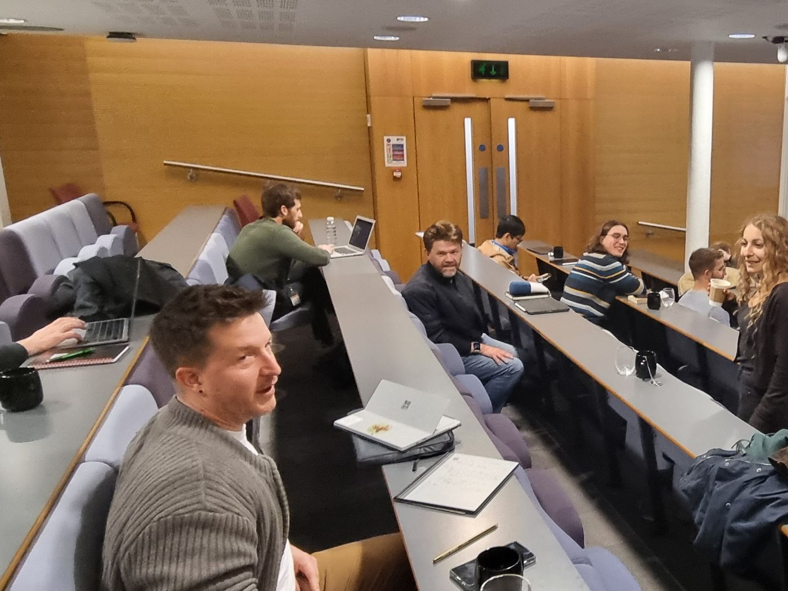
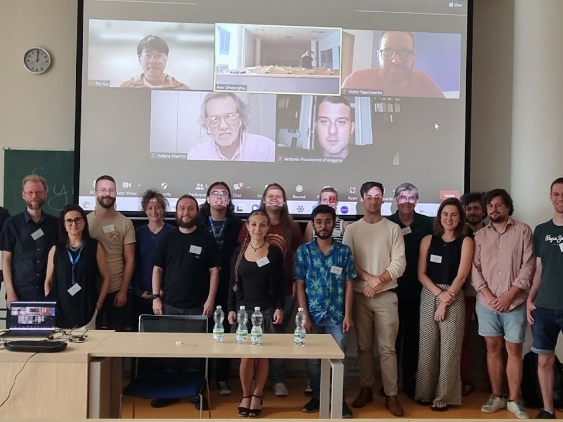
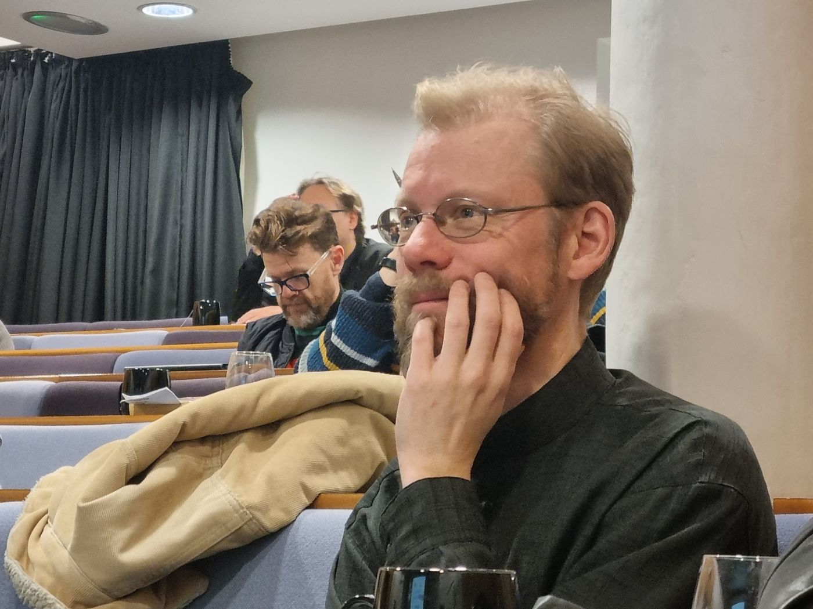
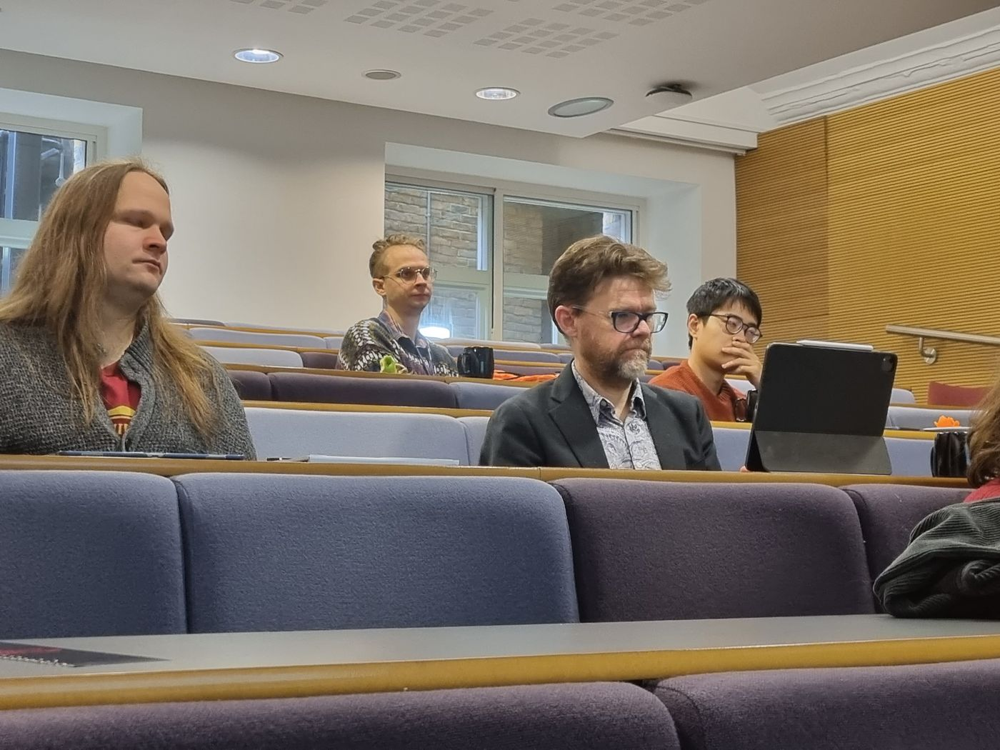

Symposium on Proof-theoretic Semantics
A series of meetings on the idea that the meaning of logical expressions is given by the rules of proof.
About the series
Proof-theoretic semantics holds that the meaning of a logical constant is determined not by its truth conditions but by the rules that govern its use in inference. The series gathers researchers working on the foundations, ramifications, and open problems of this programme, in logic, philosophy, and computer science.
Six meetings have been held since 2022, in London, Prague, and Leuven, some of them alongside TABLEAUX and ESSLLI. The series is part of the Proof-theoretic Semantics Network.
New to the field? The glossary explains its main terms, from proof-theoretic validity and base-extension semantics to harmony, inversion and bilateralism.
The community








